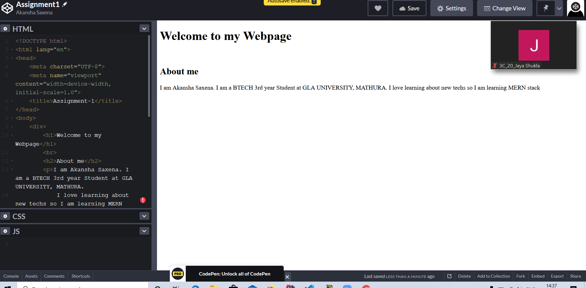

Front-end web development is everything involved in programming the user interface of a web application. Typically it refers to the Hypertext Markup Language(HTML), Cascading Style Sheets(CSS) and Javascript portion of web site production as opposed to the database or server-side programming. It encomasses everything from building a simple page of HTML , text to creating complex, responsive HTML 5 websites designed to be accessed via various differnet browsers, devices and screen sizes.
